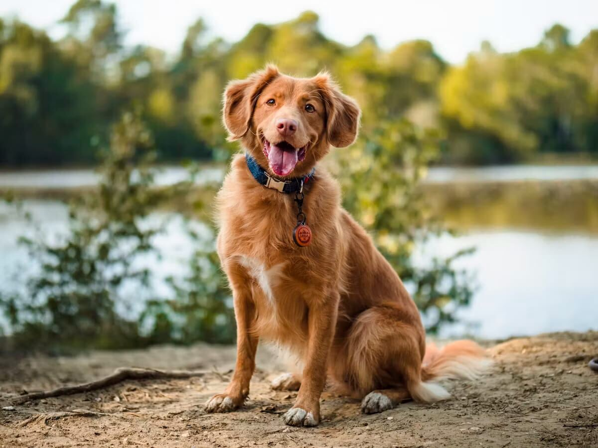

Why Is My Adult Dog Suddenly Anxious or Reactive?

Your dog didn't just "become" anxious overnight for no reason — even though it might feel that way. A calm, stable dog doesn't flip a switch without a cause. It's just not always an obvious one. Treat this as a puzzle worth solving, not a new personality you have to work around.
Rule out medical causes first
This is the step most owners skip, and it shouldn't be skipped. Pain is one of the most common hidden drivers of sudden anxiety or reactivity — a dog in physical discomfort (an emerging joint issue, dental pain, an internal problem not yet visibly obvious) often becomes more guarded, irritable, or anxious well before any other sign shows up. A veterinary exam is a reasonable first step for any sudden, unexplained behavior change, not a last resort after training hasn't worked.
Look for an environmental trigger
Something in the environment may have changed even if it seems unrelated: a new neighbor's dog, construction noise starting nearby, a change in your own schedule or stress level (dogs are remarkably sensitive to their owner's emotional state), or a single bad experience that owners sometimes don't witness directly — like an off-leash dog rushing up during a walk weeks earlier.
Consider age-related cognitive change
In dogs on the older end of "adult," early cognitive decline can present first as increased anxiety, confusion, or a lower tolerance for change before more classic signs (disorientation, disrupted sleep) become obvious. This is worth raising with a veterinarian specifically, since it's managed differently from purely behavioral anxiety.
A single bad experience can have an outsized effect
Dogs can form strong negative associations from a single significant event — a scary encounter, a fall, a loud unexpected noise — much faster than they build them up gradually. If you can identify a specific incident around when the change started, that's often the actual answer, even if the connection wasn't obvious at the time.
What to do while you investigate
Reduce exposure to the specific trigger where possible while you figure out the cause, rather than continuing to push through it — repeated exposure to an unresolved trigger tends to deepen the anxious association, not wear it down. This isn't giving up; it's avoiding making the underlying issue worse while you get to the bottom of it.
When to bring in professional help
If the behavior change is significant, involves any aggression, or medical causes have been ruled out without a clear behavioral explanation, a certified professional dog trainer or veterinary behaviorist can help identify what a general guide like this one can't — the specific pattern in your specific dog's history and environment.